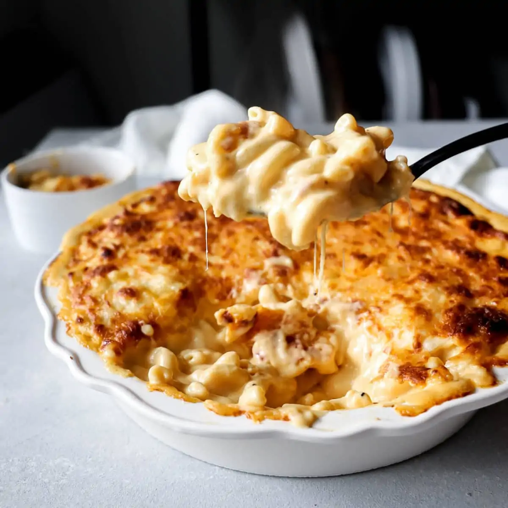

Gouda Mac N Cheese

Gouda Mac N Cheese is an extra creamy variety of a classic Mac N Cheese recipe. With few ingredients and a delicious cheese topping, this one is sure to delight.
Ingredients
- Gouda cheese, half pound
- Box of noodes, your choice
- Cream cheese
- Bread crumbs
Steps
- Leave block of cheese out to become room temp
- Boil water, add boxed noodles
- After boiling, add al dente noodles to a pan
- Add gouda cheese, slowly mixing as it melts